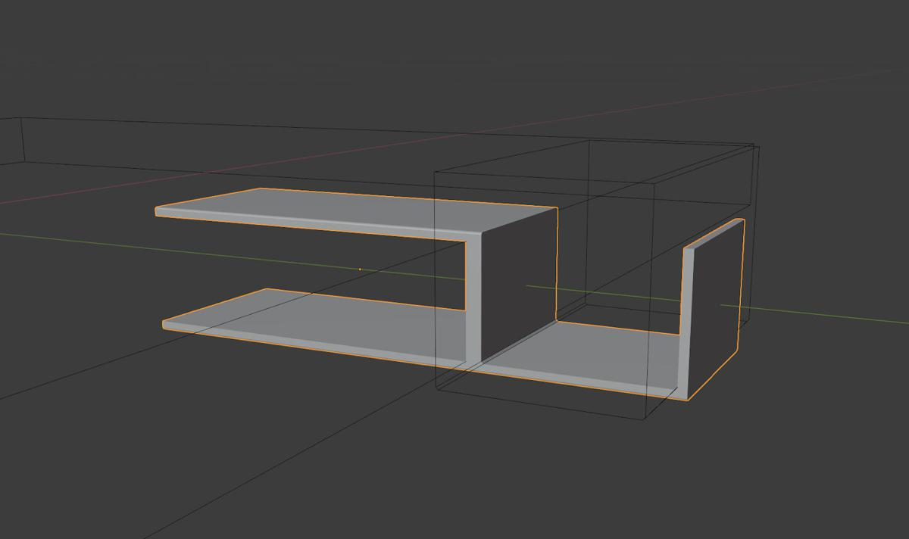

3D TODO list 1; Držák na sluchátka
Jak jsem uvedl v mém posledním blogu 3D tiskárna Průša MK3S+; sestavení a první tisk, udělal jsem si před nákupem tiskárny si seznam deseti věcí k vytištění. Tady je první z nich.
K počítači používám sluchátka, a je opravdu otravné, když se povalují na stole a obecně se pletou do cesty a zabírají místo. Dřív jsem nějaký čas používal šroubek, našroubovaný do strany stolu, na který jsem sluchátka věšel. Používat jsem ho přestal, když jsem se na něj při manipulaci s věcmi na stole nabodl. Opticky je velmi malý a je jednoduché zapomenout, že tam je. Když jsem si nedával bacha, tak bylo opravdu jednoduché se na něj nabodnout.
Přirozeně tedy jedna z prvních věcí, co jsem si chtěl vytisknout byl držák na sluchátka, protože to je věc, která mi okamžitě přinese jasný benefit a vyřeší jednu z mých potřeb. Změřil jsem si tedy stůl a sluchátka a přišel s následujícím nákresem, jak by to asi mohlo fungovat:
Jediný rozdíl mezi nákresy je, jak má držák držet na stole. První používá jakési pérko, druhý nějaký druh šroubu.
Blender
Modelování bylo triviální; vytvořil jsem velkou kostku, která reprezentovala stůl a dtruhou menší kostku, která reprezentovala držák. Potom jsem od kostky držáku odečetl boolean modifikací stůl.
Z konce držáku jsem potom extrudoval (blendeří terminus technicus) konec držáku a přidal jsem další booleanovskou kostku, která vytvořila držák na sluchátka. Rozměry téhle kostky jsem nastavil na rozměry sluchátek.

Přidal jsem pár bevelů (zaoblených hran) a jakousi pružinu, která by měla držák přidržovat na stole. Takhle vypadala finální verze:
Původně jsem chtěl přidat přítlačnou pružinu nahoru, ale pak jsem si řekl, že bude lepší dole, aby se do ní nezachytával prach a bordel.
Bylo mi jasné, že tohle je jen první prototyp, a že budu muset nejspíš vytisknout ještě jeden, protože tolerance tisku nejsou úplně ideální a určitě budu chtít nějaké změny, až uvidím jak se to chová.
Tisk
Původně jsem chtěl vytisknout držák ze strany, abych odstranil nutnost podpor, ale PrusaSlicer udělal divnou věc a pružinu úplně vyhodil, když jsem model (ve Sliceru) otočil do strany:
Přitom tam to pérko bylo, dokud jsem model neotočil. Divné.
Nakonec jsem vytiskl model s kopou podporu, což je něco čemu jsem se chtěl vyhnout. Ale pérko tam je, tak co.
Tady je vytištěný předmět:
Jakmile jsem model viděl v praxi fungovat, bylo mi jasné, že tohle není úplně ideální tvar. Tělo modelu je moc tenké, a taky se mi nelíbí jak málo to přilnává k desce stolu. A obecně jak to trčí do strany, to bylo inspirované původním šroubkem a bylo na čase vymyslet něco lepšího.
Pružina zespodu se taky ukázala jako moc malá a neužitečná.
Mk2
Díky praktickým zkušenostem z Mk1 verze modelu jsem se rozhodl zkusit jiný přístup k držáku, a upravit jeho tvar na tohle:
Trvalo mi to několik iterací, ale nakonec fungoval podle očekávání a navíc se tiskl dost rychle, protože model jde tisknout na z boku a není třeba podpor.
Mk3
Mk2 skončil tak, že jsem udělal finální nízko-kvalitní verzi tisku s několika úpravami (velikost hrbolů uvnitř svorky), se kterou jsem byl velmi spokojený a která fungovala jak měla, takže jsem jí používal. Po několika dnech jsem si ale všiml, že držák nedrží jak bych čekal. Tady je důvod:
Ukázalo se, že PLA se časem prohnul a ztratil flexibilitu, takže svorka zůstala jakoby otevřená. Tak tedy zpět ke kreslícímu prknu Blenderu. Tady je návrh verze Mk3. Rozhodl jsem se přestat uvažovat o držáku jako o něčem dočasném a sundavacím, a přišroubovat ho ke stolu.
Výsledek více/méně fungoval, dokud jsem se neotočil na židli a omylem ho neukopl:
Řešení tohohle problému bylo fakt jednoduché; prostě přidat trojúhelníkovou podporu, která ho učinila víc neukopnutelným:
Výsledek funguje skvěle. Zkoušel jsem ho zlomit rukama, ale ať jsem se snažil jak chtěl, tak se mi to nepovedlo. Myslím že tahle verze přežije pár náhodných kopnutí.
Závěr
Ačkoliv se může zdát, že můj přístup byl poněkud plýtvajícím, opravdu si velmi užívám schopnost dělat rychlé iterace, což mi umožnilo rychle se naučit něco nového a taky získat skill a pocit pro to jak optimálněji designovat věci k 3D tisku. Vidět co je možné a co je nepraktické a bude se třeba tisknout dlouho, nebo blbě.
Taky mi to umožnilo vidět jaká verze je praktická a jak celý koncept rychle vylepšit do použitelnosti.
Hodně se mi líbí, jak se člověk může zamyslet, vymyslet něco ve své hlavě a pak to během chvilky převést na hmotu.

{kind=link}
{kind=link}
{kind=link}
{kind=link}
{kind=link}
{kind=link}
{kind=link}
{kind=link}
{kind=link}
{kind=link}
{kind=link}
{kind=link}
{kind=link}
{kind=link}
{kind=link}
{kind=link}
{kind=link}
{kind=link}